The week AI's
valuation ceiling
got shattered
Anthropic is reportedly closing in on a $30B raise that would peg its valuation near $900B — while simultaneously landing a compute deal with SpaceX and shipping product for small business. This isn't one story. It's every story compressed into five days.
Read the Dispatch ↓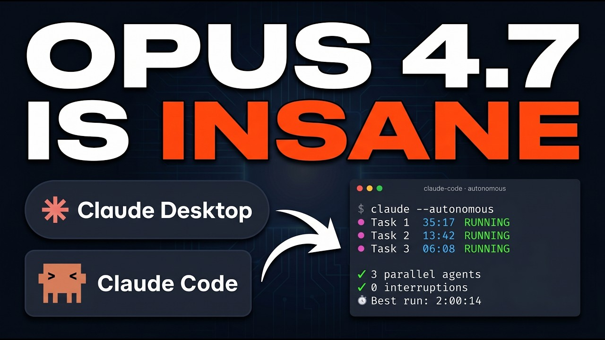
Anthropic dropped an incremental Opus-family update on May 12 — Opus 4.7 (Fast) — specifically targeting latency and cost for enterprise inference. Faster Opus means benchmark comparisons tighten and enterprise switching costs quietly rise.
Read more →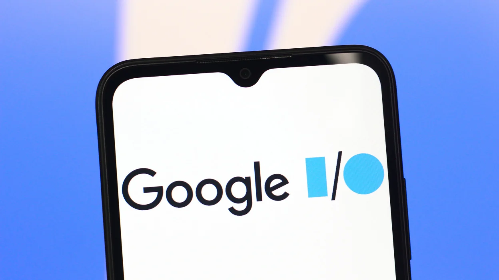
Google confirmed a major Gemini model update as the headline act at Google I/O (May 19), with public reporting pointing toward a "Gemini 4.0" or substantial 3.x iteration. A flagship Gemini release reshapes multimodal and agentic coding benchmarks, plus Android's on-device roadmap.
Read more →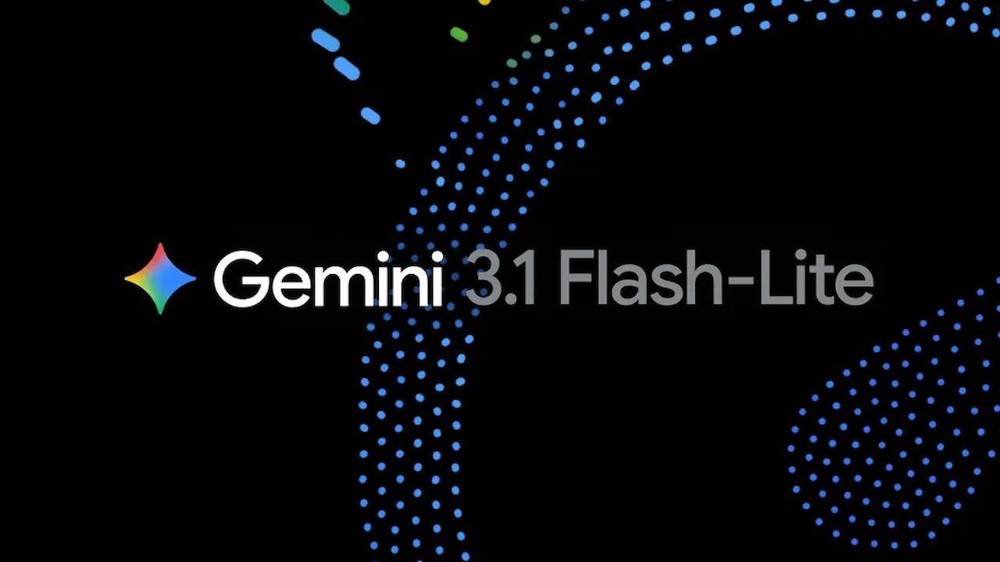
Public tracking sites logged Gemini 3.1 Flash Lite in release logs in early May — a smaller, faster model variant for device and low-cost inference. Google's tiered model strategy mirrors what Anthropic did with Haiku: build the flagship, then immediately race down-market.
Read more →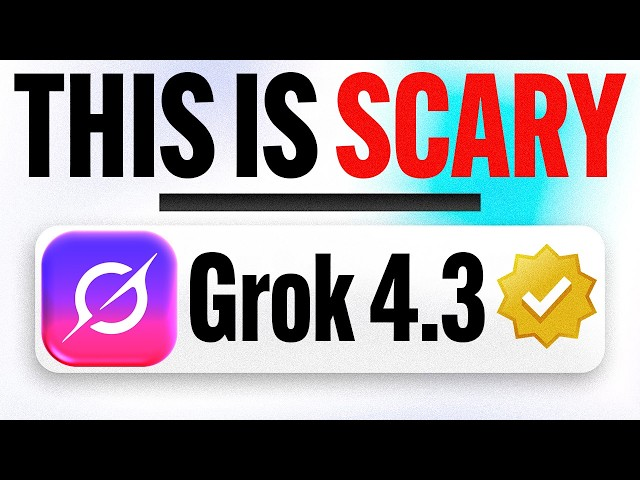
xAI's Grok 4.3 appeared in public model trackers in the late April-to-May window — a quiet incremental update. For a model that lives inside X's social graph, incremental Grok updates carry outsized moderation implications.
Read more →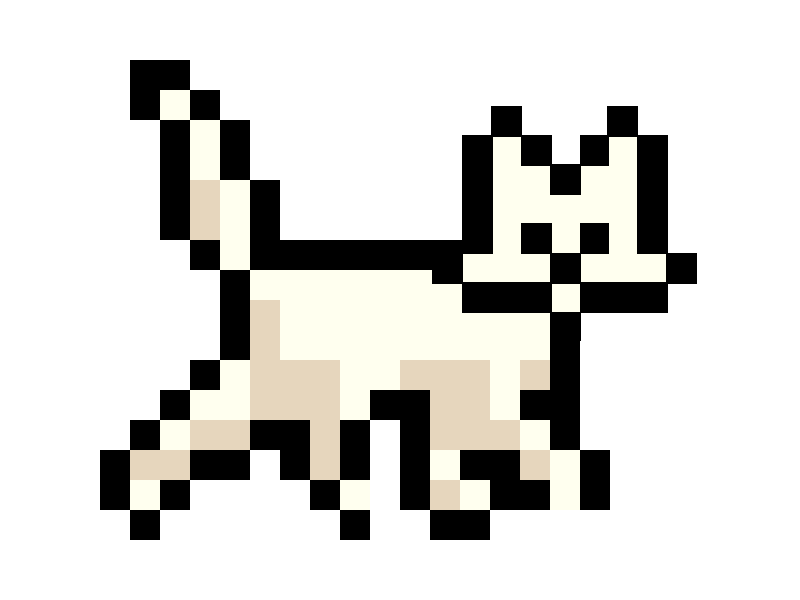
LLM release trackers logged Mistral Medium 3.5 and Perceptron Mk1 (May 12) in the same week window, alongside Ring-2.6-1T (May 8) and IBM's Granite 4.1 8B. The mid-tier is getting crowded — and that is good news for anyone buying inference at scale.
Read more →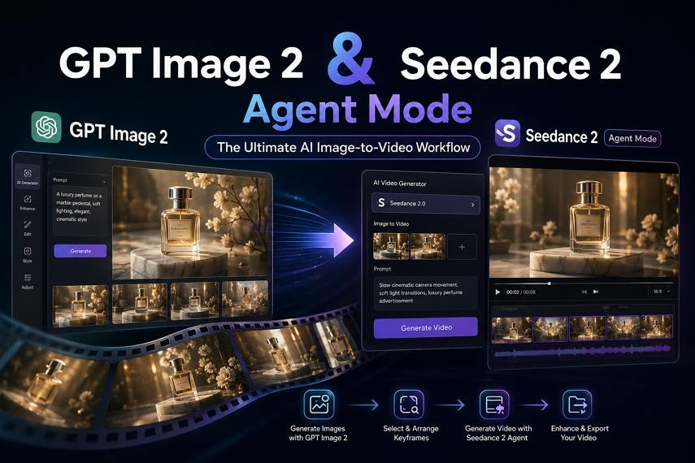
April releases of OpenAI's GPT-Image-Gen-2 and ByteDance's Seedance 2.0 continued circulating in May trackers — both image/video generation models. New multimodal releases don't just expand capability; they expand the content-moderation risk surface in equal measure.
Read more →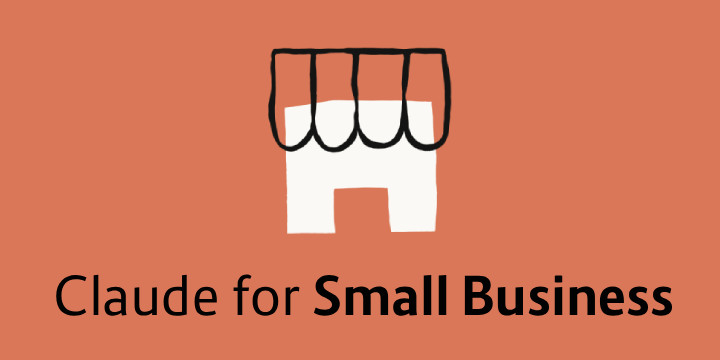
Anthropic activated a "Claude for Small Business" toggle inside Claude Cowork on May 13, connecting QuickBooks, PayPal, and HubSpot directly to the assistant. Direct SMB integrations aren't just a product move — they're a monetization thesis: land where the invoices live.
Read more →
Press leaks ahead of Google I/O described new OS-level AI features — including "Aluminium OS" references and Android XR glasses integration — all tied to Gemini. OS-level integration is the distribution moat that makes model competition almost irrelevant for most users.
Read more →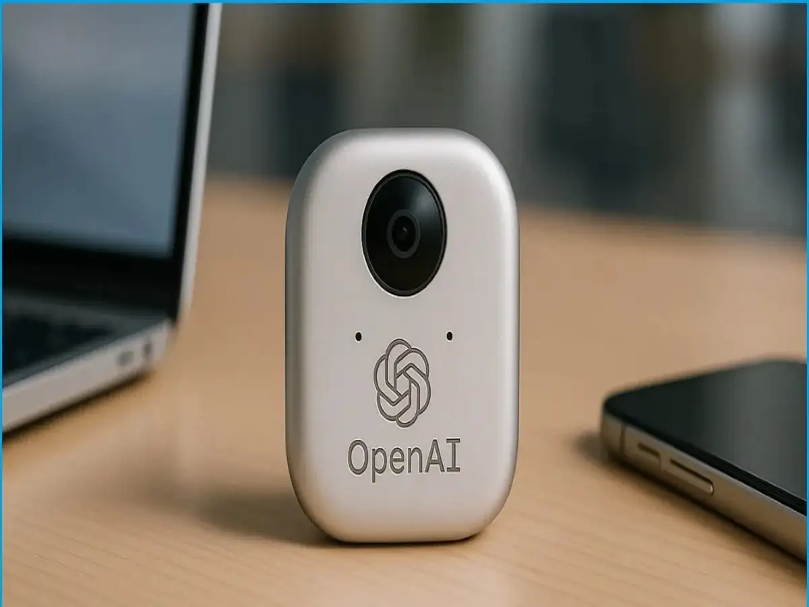
Multiple outlets reported growing signals that OpenAI is exploring a dedicated "AI-first device" — with no public confirmation by May 16. No confirmation, but the direction of travel is obvious: ChatGPT wants to be hardware, not just an app.
Read more →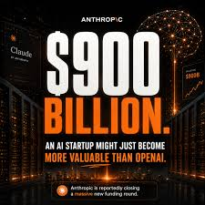
Mid-May reporting described Anthropic progressing toward a ~$30B fundraise implying a valuation north of $900B — terms unfinished as of May 16. A round this size doesn't just change Anthropic's options; it signals that capital markets believe frontier AI is a generational infrastructure bet, not a software cycle.
Read more →
Anthropic and SpaceX/xAI were reported to be finalizing terms for Anthropic to access xAI's Colossus 1 supercomputer cluster. Preferential compute access doesn't just speed up training — it changes which models are even feasible to build.
Read more →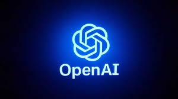
Outlets flagged OpenAI's apparent move to spin out a separate deployment-and-consulting unit ("DeployCo") with distinct capitalization. Frontier labs don't just sell API tokens — they're building the professional services layer that enterprise software companies used to own.
Read more →InforCapital and other VC trackers documented a surge in May AI funding — $25B disclosed across at least 37 deals — with mega-rounds skewing the totals. When this much capital moves this fast, hiring waves, acquisitions, and product expansion follow within 6–12 months.
Read more →Industry newsletters described continued M&A speculation among cloud, chip, and AI firms in mid-May — with no single large acquisition completed in the 11–16 window. The rumor mill at this intensity usually means someone signs something within the quarter.
Read more →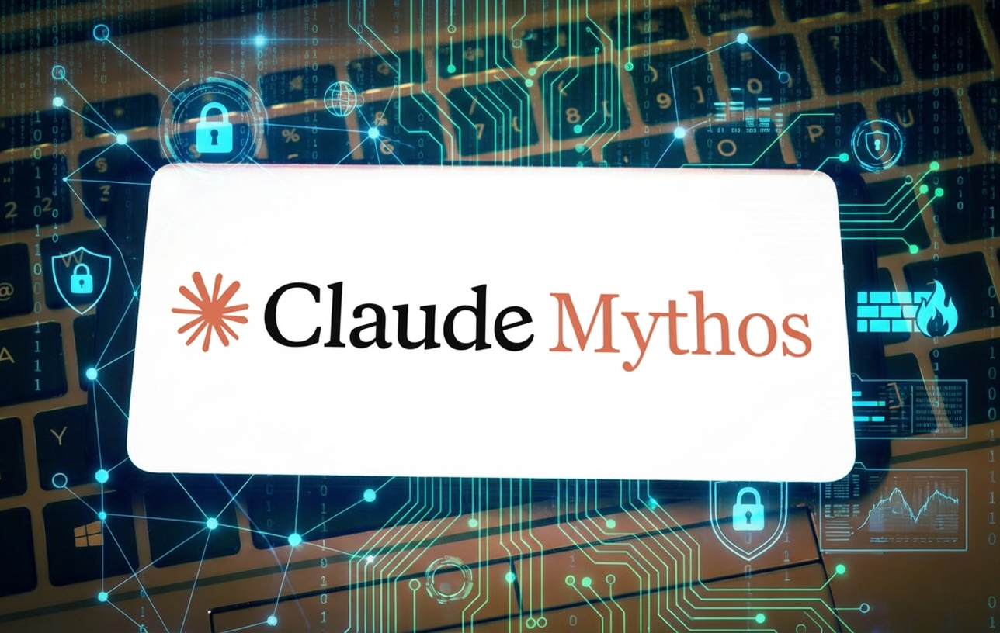
Anthropic's Mythos preview and limited early-access programs for cybersecurity red-teaming (seeded in April) continued gaining coverage in mid-May as more partnerships were announced. Gating high-capability tools to selected security partners is labs admitting, quietly, that some capabilities are too sharp to ship to everyone.
Read more →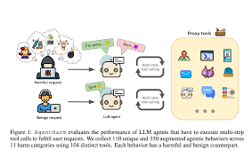
LLM trackers flagged multiple preprints, model checkpoints, and dataset releases from smaller labs and institutions during the May 11–16 window. Open checkpoints shift reproducibility and give academic teams baselines for benchmarking that don't depend on frontier API access.
Read more →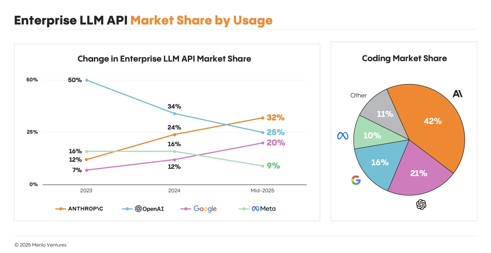
LLM Stats and LM Market Cap documented a high-frequency pace of model updates across labs in mid-May 2026 — dozens of incremental releases across the month. Fast release cadence is a benchmark nightmare: enterprise procurement teams now can't assume the model they evaluated last month is the one they're buying today.
Read more →Mid-May reporting confirmed the US Commerce Department's CAISI had established pre-deployment AI evaluation agreements with OpenAI, Anthropic, Google DeepMind, Microsoft, and xAI. Formal evaluation pathways with five frontier labs simultaneously is a policy architecture shift — the US is no longer just watching; it has a seat at the pre-launch table.
Read more →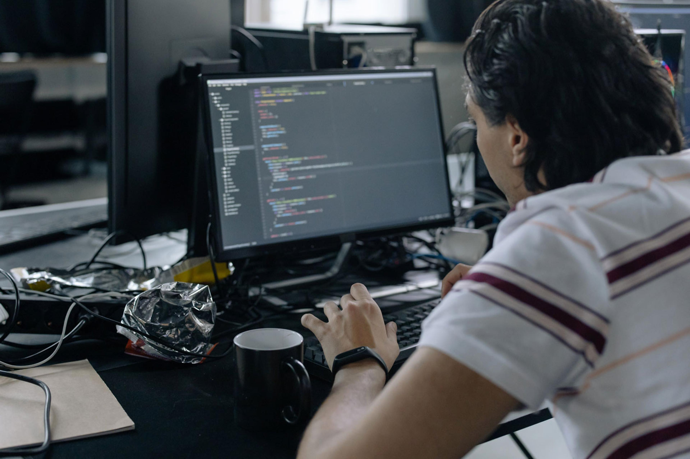
Coverage in mid-May described EU and UK agencies updating red-teaming guidance and engaging directly with labs ahead of Google's and Anthropic's imminent releases. When regulators update guidance the week before major model launches, it means pre-deployment review is becoming the new normal — not a one-off.
Read more →
Compiled 2026 timelines show regional AI service restrictions and re-openings — particularly around Grok — being actively referenced in May regulatory coverage. Local regulatory actions change user reach and force product design decisions that global teams weren't expecting.
Read more →The International AI Safety Report 2026 continued to be referenced across regulatory and lab conversations in May — serving as a shared baseline for cross-border alignment discussions. A credible shared safety baseline is what makes multilateral AI governance possible at all.
Read more →Earlier 2026 moderation incidents — including adult deepfake generation failures — continued surfacing as background in May policy discussions, with Grok-specific region restrictions still being referenced. Recurring content-moderation failures don't just damage trust; they create a precedent that regional governments are now actively using.
Read more →OpenAI's video generation app Sora was publicly shut down in late April; May coverage kept referencing it as a cautionary data point on launching generative video at scale. High-profile shutdowns reveal what labs don't say out loud: deployment safety for video generation isn't solved yet.
Read more →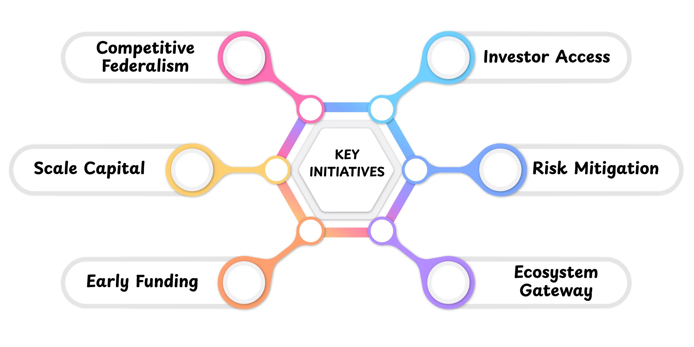
Mid-May coverage repeatedly flagged preview-only rollouts — Anthropic Mythos, limited high-capability access — and shutdowns as a defining pattern of the week. Labs are shipping capabilities faster than they can safely deploy them, so preview gates are becoming a product strategy, not just a safety precaution.
Read more →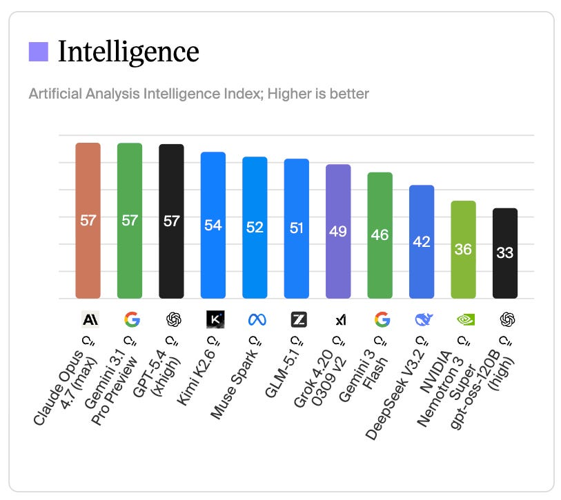
Multiple aggregator outlets published "week in AI" summaries for May 11–16 — but trackers note that some items mixed confirmed releases with single-source rumors. The aggregator layer is a real risk: if you're reading summaries of summaries, you may be consuming fiction dressed as signal.
Read more →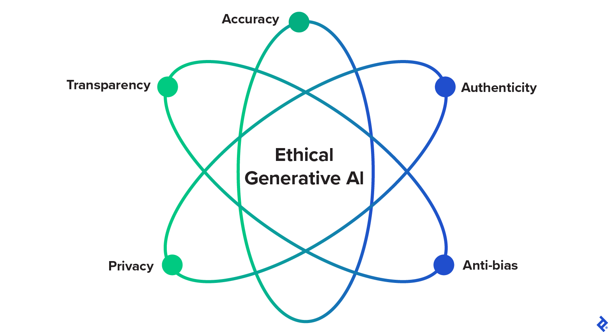
Academic and policy literature — including a ScienceDirect study on generative AI ethical risks and mitigation strategies — continued entering the mainstream conversation during mid-May. Ethical concerns aren't slowing deployment; they're being managed in parallel, which is either reassuring or alarming depending on your priors.
Read more →The $900B Number Changes Every Negotiation in AI
Anthropic's reported $900B implied valuation isn't just a headline — it's a negotiating anchor that will echo through every enterprise contract, partnership term, and regulatory conversation for the next six months. When a lab prices itself near SpaceX, it signals to customers that they're buying infrastructure, not software. Enterprise buyers will respond the same way they did when cloud became essential: compliance, not comparison shopping. The deeper consequence is what it does to the competitive set. At a $900B valuation, Anthropic is no longer competing with Cohere or Mistral — it's competing with AWS. That means product strategy, pricing, and distribution have to be rethought at that scale. The SpaceX Colossus compute deal arriving in the same week isn't coincidence; it's capability-signaling ahead of a fundraise. Investors buying at $900B need to believe the training compute is secured. These two stories are one story.
Deep dive →Government Is Inside the Lab Now — Not Watching From Outside
The US CAISI pre-deployment evaluation agreements with five frontier labs simultaneously marks a structural shift in how governments engage with AI. This is not advisory committees or voluntary commitments — it is formalized access to models before public release. Combine that with EU and UK agencies updating red-teaming guidance the same week as major model launches, and you have the first credible architecture of multilateral AI oversight. The six-month implication is significant: labs that want to deploy at scale will need to build for regulatory review as a default, not an afterthought. That changes model development timelines, what gets shipped versus what stays in preview, and how safety claims are documented internally. The International AI Safety Report in circulation simultaneously gives regulators a shared technical vocabulary. This is the week that "responsible scaling" went from a marketing term to a procurement requirement.
Deep dive →OS-Level AI Is The Distribution Win That Makes Model Wars Irrelevant
Google's Android XR integrations and OS-level Gemini features — announced ahead of I/O — are the most strategically underreported story of the week. When an AI model is embedded at the operating system layer, the consumer never chooses it again. They just use it. This is the playbook that made Google Search the default: own the layer beneath the app. The implication for OpenAI, Anthropic, and every API-first company is that distribution via OS will eventually be more valuable than model quality. Users don't benchmark; they tap. The hardware rumors around an OpenAI AI-first device are a direct response to exactly this threat. If Google owns Android and Apple builds its own on-device stack, OpenAI's distribution is entirely dependent on third-party surfaces it doesn't control. The device rumors aren't product strategy — they're an existential hedge.
Deep dive →Multiple outlets spent the week treating OpenAI device rumors as a confirmed strategic pivot — with headlines implying imminent hardware. What the evidence actually supports is this: unnamed sources described "signals and rumors" that OpenAI was "exploring" a device. There is no confirmed form factor, no confirmed launch timeline, no confirmed partner, and no confirmed product name. The hype is running on the fumes of the Humane AI Pin cycle and the assumption that every major AI company must become a hardware company. OpenAI's actual competitive advantage is distribution through ChatGPT, API access, and Microsoft. An unconfirmed rumor about an unexplained device does not belong in the same analytical tier as Anthropic's confirmed $30B raise or Google's confirmed I/O product lineup.
The $25B May AI funding headline circulated widely — but the figure aggregates 37 deals of wildly different types, sizes, and geographies, with mega-rounds (likely 2–3 deals) skewing the total so dramatically that the number tells you almost nothing about the health of the broader startup ecosystem. Reporting framed this as "AI is capturing all the capital" — which is misleading when the actual distribution is probably 1–2 large infrastructure rounds plus dozens of seed and Series A deals. The practical insight — that capital is flowing heavily into AI infrastructure, tools, and verticals — is real and worth tracking. The "$25B surge" framing, however, treats a statistical artifact of a few large rounds as evidence of sector-wide momentum. Smart readers should decompose the figure before treating it as a signal.